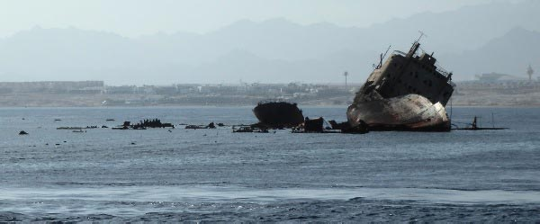

Старый корабль "Луллия", 2009-12

Вокруг острова Тиран много коралловых мелей. Каждый день на небольших корабликах туда привозят сотни туристов полюбоваться кораллами и рыбками в исключительно чистой воде. С противоположной стороны от острова Тиран, а также ближе к берегу, проходят напряжённые судоходные трассы. Со стороны отеля Конрад видны 2 корабля, попавшие когда-то на риф, но ещё не полностью разрушенные волнами.
В сентябре 1981 года торговое судно "Луллия" (Панама, 3461 т) село на мель у рифа Гордон.
Когда море спокойное к кораблю можно подойти на туристических катерах. Его не стали демонтировать, так как вблизи нет достаточной глубины. Частично затонувшее судно опаснее, чем хорошо видимое. Туристы замечают этот корабль раньше, чем маяк, который есть поблизости.
Луллия, 1981 год (с)
cameldive.ru
Луллия, 1990 год (с)
cameldive.ru
Несмотря на несколько маяков, расположенных на этих рифах, в 2000 году в борт Луллии врезалось ещё одно судно. Это ускорило разрушение старого корабля.
Я был в этом месте в 2004 и 2009 годах. Разрушение корабля происходит довольно быстро.
{kind=link}
{kind=link}
Если подойти с другой стороны рифа Гордон , то можно увидеть ржавое течение от корабля. Корабль довольно быстро "растворяется" в море. В штормовую погоду обломки выносит на риф.

Луллия, 2009 год. Вид со стороны острова Тиран.
{kind=link}
В 1984 году грузовой корабль Kormoran (Германия) на большой скорости налетел на риф Лагуна. Получил сильные повреждения и затонул.
В 1985 году грузовая баржа "Лара" (Кипр, 4752 т) села на мель у рифа Джексон. В 1996 году большая часть корабля была демонтирована и затоплена. Осталось что-то вроде, скелета здания.
Вот схема рифа и дна между островом Тиран и берегом Синая. На схеме указаны 3 корабля: Lullia (Lovilla), Lara, Kormoran.
{kind=link}
Некоторые затонувшие здесь суда до сих пор не найдены.